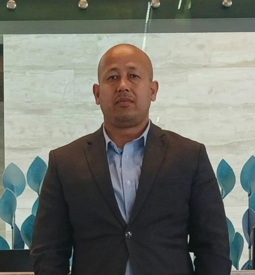

ACADEMIC PROJECT · AIS
Payroll Application
Database schema and secure authentication for payroll workflows covering NZ tax rules, KiwiSaver, public holidays, and employee roles.
IT graduate & support specialist · Web development
I bridge technical infrastructure and client-facing service, bringing a practical, problem-solving mindset to web development and IT support.

A little about me
An IT Graduate & Support Specialist with a Master of Information Technology and extensive experience bridging technical infrastructure with client-facing service. Skilled in Web development, with a solid foundation in IT support and problem-solving ability. A strong team player committed to continuous learning and professional growth.
My path runs from running a cybercafé through Java backend development in Kathmandu, Nepal to full-stack projects in New Zealand.
My resume →Technical inventory
The work
A collection of roles, lessons, and systems shipped along the way.
Payroll Ekaa Solutions Limited · New Zealand
“Where requirements became workflows, models, and working software.”
Contributed to a C# ASP.NET MVC payroll prototype. Helped gather requirements, researched administration and payroll features, designed database objects for employees and payroll information, and communicated progress with supervisors.
Digi Hub Pvt. Ltd. · Kathmandu, Nepal
“The chapter where backend engineering became a craft.”
Contributed to an HRMS, collaborating with senior developers and testers to implement backend features. Used ORM techniques and SQL queries for database operations, then debugged issues during development and post-deployment.
Digi Hub Pvt. Ltd. · Kathmandu, Nepal
“The first chapter of a deliberate engineering practice.”
Improved Java programming with Spring Boot, followed software development best practices, sought feedback from senior developers, and worked on small to medium-scale modules.
Selected projects
Software built to be useful, clear, and a little easier to live with.
CAPSTONE PROJECT · AIS
A lost and found platform to report items, discover matches, exchange messages, and reunite belongings with their owners.
ACADEMIC PROJECT · AIS
Database schema and secure authentication for payroll workflows covering NZ tax rules, KiwiSaver, public holidays, and employee roles.
ACADEMIC PROJECT · AIS
A task manager with authentication and CRUD features, planned with GitHub Kanban and deployed with GitHub Actions and Vercel.
PROFESSIONAL PROJECT · DIGI HUB
Java and Spring Boot backend development, database integration, issue resolution, and API testing with Postman and Swagger.
Notebook
Good software begins with curiosity about the person on the other side of the screen.
Clear names, useful tests, and simple boundaries are gifts to the future.
The best engineers keep learning from users, teammates, and the systems they inherit.
Education
Auckland Institute of Studies · Sep 2024 — May 2026
Post Graduate Diploma in Computer Application
Kantipur City College · Jul 2020 — Jul 2022
If you have a problem worth solving